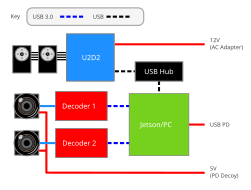

Wiring
Now that you've assembled your RLG G1 Neck, it is time to hook everything up!

There are only a few things to be noted about how each cable should be connected:
- C1 Cameras
- A usb 3.0 capable hub will probably work for both cameras. Just make sure it has enough bandwidth
- Accuvision
- Hub will probably fail; Connect directly to Jetson/PC with Superspeed USB capable cables (the reason for this is still unknown)
- The cameras need their own 5v supply; you can have them both powered by a PD decoy module
- U2D2: Make sure the micro USB cable actually has data lines (sometimes they don't)
- Jetson notes
- The right usb port on the Jetson AGX Thor devkit (port 5a) is sometimes
configued as
device, making peripherals unable to connect (see diagram here) (more on this). Therefore, this port should ideally be used for power input only. - Accuvision: connect using USB C - A cables to the two USB A ports of the Jetson
- The right usb port on the Jetson AGX Thor devkit (port 5a) is sometimes
configued as